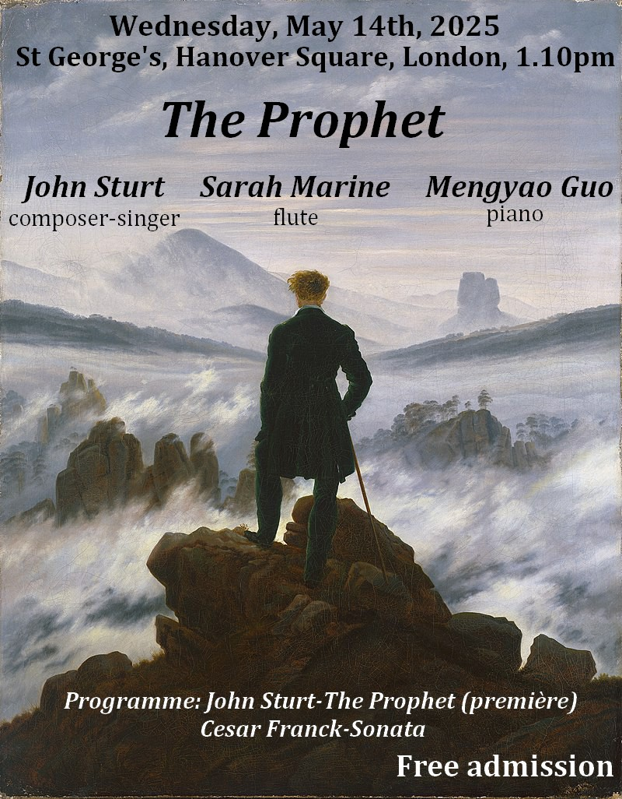

Performers:Sarah Marine (flute), John Sturt (voice), Charis Hanning (piano)
These chamber music performances, for our flute, baritone and piano ensemble, are centered around Khalil Gibran´s famous book, "The Prophet", an important and beautiful work of poetry and philosophy. In 2025, I commissioned John Sturt to write a setting of this text. The result is a charming hour-long song cycle with engaging narration. You can click on the poster to listen to a short extract on YouTube.
